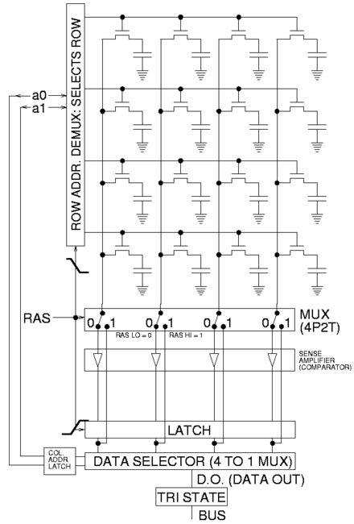
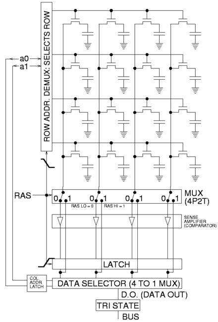
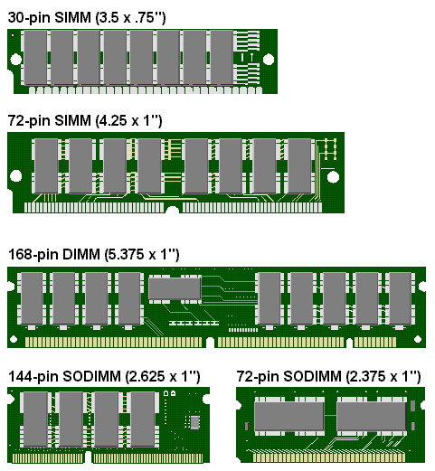
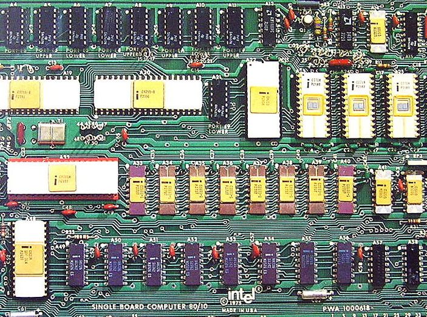
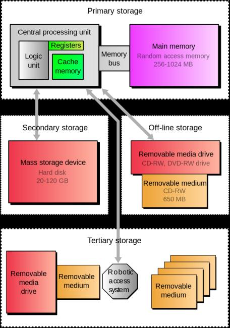
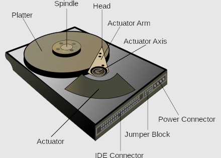
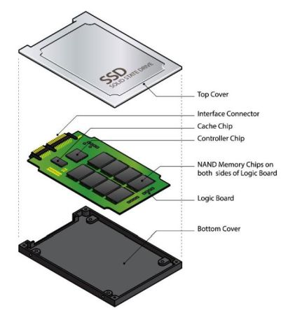
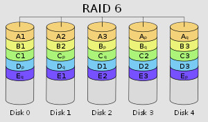

The computer's workspace (physically, a collection of RAM chips). It is an important resource, since it determines the size and number of programs that can be run at the same time, as well as the amount of data that can be processed instantly. All program execution and data processing takes place in memory.
The program's instructions are copied into memory from disk or tape and then extracted from memory into the control unit circuit for analysis and execution. The instructions direct the computer to input data into memory from a keyboard, storage, or network.
As data is entered into memory, the previous contents of that space are lost. Once the data is in memory, it can be processed (calculated, compared and copied). The results are sent to a screen, printer, disk, tape or communications channel. Memory is like an electronic checkerboard, with each square holding one byte of data or instruction. Each square has a separate address like a post office box and can be manipulated independently. As a result, the computer can break apart programs into instructions for execution and data records into fields for processing.
Each checkerboard square of memory holds one byte.The contents of any single byte or group of bytes can be calculated, compared and copied independently.That's how fields are put together to form records and broken apart when read back in. On the disk, data is stored in sectors, which hold a chunk of data (typically 512 bytes) and are the smallest unit that can be read or written. Two ways to categorize memory is volitile and non volitle.
VOLATLE
Volatile memory loses its stored data when the power to the memory chip is turned off. However it can be faster and less expensive than non-volatile memory. This type is used for the main memory in most computers, since data is stored on the hard disk while the computer is off.
SRAM

Static RAM memory cell is a type of flip-flop circuit, usually implemented using FETs. These require very low power to keep the stored value when not being accessed.
DRAM
 

The most common type of computer memory. It usually uses one transistor and a capacitor to represent a bit. Charging and discharging this capacitor can store a '1' or a '0' in the cell. However, the charge in this capacitor will slowly leak away, and must be refreshed hundreds of times per second in order to maintain the charges. Because of this refresh process, DRAM uses more power, but can achieve greater storage densities.
SDRAM
Synchronous dynamic random-access memory (SDRAM) is added circuitry to the DRAM chip which synchronizes all operations with a clock signal added to the computer's memory bus. This allowed the chip to process multiple memory requests simultaneously using pipelining, to increase the speed. The data on the chip is also divided into banks which can each work on a memory operation simultaneously. This became the dominant type of computer memory by about the year 2000.
DDR SDRAM
Double Data Rate SDRAM, can transfer twice the data (two consecutive words) on each clock cycle by double pumping (transferring data on both the rising and falling edges of the clock pulse). Extensions of this idea are the current (2012) technique being used to increase memory access rate and throughput. Since it is proving difficult to further increase the internal clock speed of memory chips, these chips increase the transfer rate by transferring more data words on each clock cycle.
SIMM
Single In-line Memory Module is a narrow printed circuit board that holds memory chips. It plugs into a SIMM socket on the motherboard or memory board. The first SIMM format that became popular on personal computers was 3.5" long and used a 30-pin connector. A larger 4.25" format uses 72-pins and contains from one to 64 megabytes of RAM. Before SIMMs, memory chips used to be solder into the motherboard. Modules are more easily upgraded or repaired.
 
DIMM
Dual In-line Memory Module, evolved from SIMMS, the difference in DIMMS is in the way the pins are wired. SIMM pins are the same circuit path on both sides of the edge connector. DIMM pins are different on each side, providing double the circuit paths. DIMM modules can be added one at a time on a Pentium motherboard, whereas SIMMs are generally used in pairs and in groups of four on older computers.
PCs use either nine-bit memory (eight bits and a parity bit) or eight-bit memory without parity. Macs use eight-bit memory without parity.
Although it's obvious that you have to put SIMMs in SIMM slots and DIMMs in DIMM slots, the memory chips must also be the same type (EDO, SDRAM, etc.) and the same or faster speed than your existing memory. In addition, your manual should show you all possible combinations of different-sized modules that can be used in the available memory slots. The 72-pin SIMMs and DIMMs are widely used in desktop computers and servers.
SODIMMs
Small Outline DIMMs are used in laptops, while 30-pin SIMMs are typically found in older PCs.
Shift registers, processor registers, data buffers and other small digital registers that have no memory address decoding mechanism are not considered as memory although they also store digital data.
SRAM
Static random-access memory relies on several transistors forming a digital flip-flop to store each bit. This is less dense and more expensive per bit than DRAM, but faster and does not require memory refresh. It is used for smaller cache memories in computers.
NON VOLATILE
Nonvolatile memory preserves the data stored in it during periods when the power to the chip is turned off. Therefore, it is used for the memory in portable devices, which don't have disks, and for removable memory cards among other uses.
ROM (Read-only memory) This is designed to hold permanent data, and in normal operation is only read from, not written to. Although many types can be written to, the writing process is slow and usually all the data in the chip must be rewritten at once. It is usually used to store system software which must be immediately accessible to the computer, such as the BIOS program which starts the computer, and the software (microcode) for portable devices and embedded computers such as microcontrollers.
See the Firmware page for more about chip code.
PROM (Programmable read-only memory) In this type the data is written into the chip before it is installed in the circuit, but it can only be written once. The data is written by plugging the chip into a device called a PROM programmer.
EPROM (Erasable programmable read-only memory) In this type the data in it can be rewritten by removing the chip from the circuit board, exposing it to an ultraviolet light to erase the existing data, and plugging it into a PROM programmer. The IC package has a small transparent "window" in the top to admit the UV light. It is often used for prototypes and small production run devices, where the program in it may have to be changed at the factory.
EEPROM (Electrically erasable programmable read-only memory) In this type the data can be rewritten electrically, while the chip is on the circuit board, but the writing process is slow. This type is used to hold firmware, the low level microcode which runs hardware devices, such as the BIOS program in most computers, so that it can be updated.
NVRAM (Non Volatile Random Access Memory) In this type the writing process is intermediate in speed between EEPROMS and RAM memory. It can be written to, but not fast enough to serve as main memory.
It is often used as a semiconductor version of a hard disk, to store files. It is used in portable devices such as PDAs, USB flash drives, and removable memory cards used in digital cameras and cellphones.
FLASH NAND
Flash memory is an electronic (solid-state) non-volatile computer storage medium that can be electrically erased and reprogrammed.
Toshiba developed flash memory from EEPROM and released in 1984.The two main types of flash memory are named after the NAND and NOR logic gates. The individual flash memory cells exhibit internal characteristics similar to those of the corresponding gates.
While EPROMs had to be completely erased before being rewritten, NAND-type flash memory may be written and read in blocks (or pages) which are generally much smaller than the entire device. NOR-type flash allows a single machine word (byte) to be written – to an erased location – or read independently.
The NAND type operates primarily in memory cards, USB flash drives, solid-state drives (those produced in 2009 or later), and similar products, for general storage and transfer of data. NAND or NOR flash memory is also often used to store configuration data in numerous digital products, a task previously made possible by EEPROM or battery-powered static RAM. One key disadvantage of flash memory is that it can only endure a relatively small number of write cycles in a specific block.
STORAGE
|  |
Primary storage is fast, expensive, small, temporary, volatile, and inside the CPU, like registers and cache. Memory is accessed via a memory bus.
Secondary storage is slower but non-volatile, formatted and managed by a file system, which organizes the data into files and directories, time and date, and access protections. Hard disk, solid state, or flash drives are commonly used as secondary storage. Tertiary backup storage is kept outside of the system for data protection. This helps to protect data from errors, viruses, or environmental damage like fire or flood. Multiple copies of this data is often made for on site backup and off site archiving. |
HDD

A hard disk drive (HDD) is an electromechanical data storage device that uses magnetic storage to store and retrieve digital information using one or more rigid rapidly rotating disks (platters) coated with magnetic material. The platters are paired with magnetic heads, usually arranged on a moving actuator arm, which read and write data to the platter surfaces.
Data is accessed in blocks, traditionally 512-byte block sectors (recently 4k), each block can be accessed in random-access manner, not sequentially, as with magnetic tape. They are categorized as "block devices".
Introduced by IBM in 1956, HDDs became the dominant secondary storage device for general-purpose computers by the early 1960s. The two most common form factors for modern HDDs are 3.5-inch and 2.5-inch, connected to bus systems PATA, SATA, or SAS.
Modern drives and memory make extensive use of error correction codes (ECCs), particularly Reed–Solomon error correction. These techniques store extra bits, determined by mathematical formulas, for each block of data. The extra bits allow many errors to be corrected invisibly.
SSD

A solid-state drive (SSD) uses integrated circuit assemblies as memory to store data persistently. SSDs may use traditional hard disk drive (HDD) form-factors and protocols such as SATA and SAS, greatly simplfying usage of SSDs in computers. Following the initial acceptance of SSDs with HDD interfaces, new form factors such as the M.2 form factor, and new I/O protocols such as NVM Express have been developed to address specific requirements of the Flash memory technology used in SSDs.
Compared with electromechanical drives, SSDs are typically more resistant to physical shock, run silently, have quicker access time and lower latency. While the price of SSDs has continued to decline over time, SSDs are (as of 2018) still more expensive per unit of storage than HDDs and are expected to continue to be so into the next decade.
Every SSD includes a controller that incorporates the electronics that bridge the NAND memory components to the host computer. The controller is an embedded processor that executes firmware-level code and is one of the most important factors of SSD performance.
If a particular block was programmed and erased repeatedly without writing to any other blocks, that block would wear out before all the other blocks, thereby prematurely ending the life of the SSD. For this reason, SSD controllers use a technique called wear leveling to distribute writes as evenly as possible across all the flash blocks in the SSD.
A multi-level cell (MLC) is a memory element capable of storing more than a single bit of information, compared to a single-level cell (SLC) which can store only one bit per memory element.
Triple-level cells (TLC) and quad-level cells (QLC) are versions of MLC memory, which can store 3 and 4 bits per cell, respectively. Note that due to the convention, the name "multi-level cell" is sometimes used specifically to refer to the "two-level cell", which is slightly confusing.
RAID

Redundant Array of Independent Disks is a data storage virtualization technology that combines multiple physical hard disk or solid state drive components into one or more logical units for the purposes of data redundancy, performance improvement, or both.
JBOD
Just a Bunch Of Drives is an architecture using multiple hard drives exposed as individual devices. Hard drives may be treated independently or may be combined into one or more logical volumes using a volume manager. A spanned volume provides no redundancy, so failure of a single hard drive amounts to failure of the whole logical volume. Redundancy for resilience and/or bandwidth improvement may be provided, in software, at a higher level.
Disk Array
A disk array is a disk storage system which contains multiple disk drives. It is differentiated from JBOD, in that an array has cache memory and advanced functionality, like RAID and virtualization. Components of a typical disk array include:
Typically, disk arrays are divided into categories: